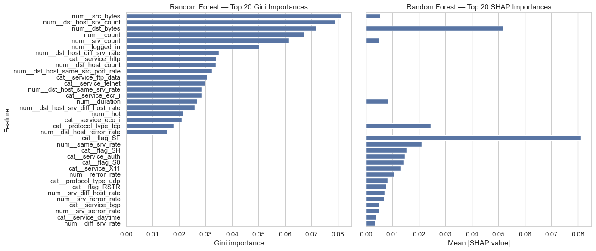
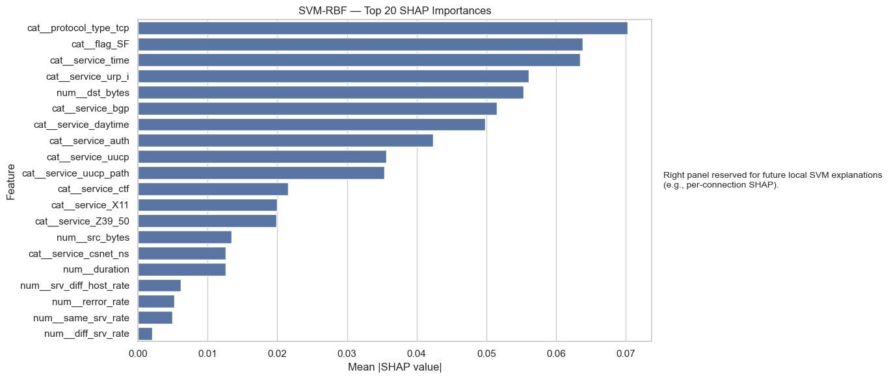
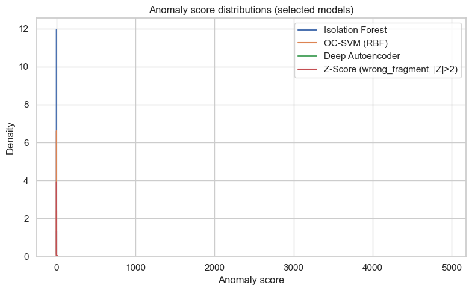

import warnings
warnings.filterwarnings("ignore")Week 06 — Final Analysis, Explainability & Reporting
import os, sys, time
from pathlib import Path
this_dir = Path.cwd()
project_root = this_dir.parent if this_dir.name == "notebooks" else this_dir
sys.path.append(str(project_root))import numpy as np
import pandas as pd
import matplotlib.pyplot as plt
import seaborn as sns
from sklearn.decomposition import PCA
# Use a clean seaborn style
sns.set(style="whitegrid")
# Project paths
this_dir = Path.cwd()
project_root = this_dir.parent if this_dir.name == "notebooks" else this_dir
sys.path.append(str(project_root))
from src.utils import Paths, set_global_seed
set_global_seed(42)
paths = Paths().ensure()
# Derive a robust reports root (Week 03–06)
reports_root = getattr(paths, "reports", project_root / "reports")
wk3_dir = reports_root / "week_03"
wk4_dir = reports_root / "week_04"
wk6_dir = reports_root / "week_06"
wk6_dir.mkdir(parents=True, exist_ok=True)
print("Project root:", project_root)
print("Reports root:", reports_root)
print("Week 03 reports:", wk3_dir)
print("Week 04 reports:", wk4_dir)
print("Week 06 reports:", wk6_dir)Project root: C:\Users\mehra\Final_Project
Reports root: C:\Users\mehra\Final_Project\reports
Week 03 reports: C:\Users\mehra\Final_Project\reports\week_03
Week 04 reports: C:\Users\mehra\Final_Project\reports\week_04
Week 06 reports: C:\Users\mehra\Final_Project\reports\week_06# Load processed arrays from Week 01
X_train_path = paths.data_proc / "X_train.npy"
X_test_path = paths.data_proc / "X_test.npy"
y_train_path = paths.data_proc / "y_train.npy"
y_test_path = paths.data_proc / "y_test.npy"
X_train = np.load(X_train_path)
X_test = np.load(X_test_path)
y_train = np.load(y_train_path)
y_test = np.load(y_test_path)
print("X_train:", X_train.shape, "X_test:", X_test.shape)
# binary labels (0=normal, 1=attack) from Week 04 logic
from collections import Counter
class_counts = Counter(y_train)
normal_label = max(class_counts, key=class_counts.get)
print("Treating label", normal_label, "as NORMAL (0). All others = ATTACK (1).")
def to_binary(y, normal):
return np.where(y == normal, 0, 1)
y_train_bin = to_binary(y_train, normal_label)
y_test_bin = to_binary(y_test, normal_label)
print("Binary train counts:", Counter(y_train_bin))
print("Binary test counts:", Counter(y_test_bin))X_train: (395216, 115) X_test: (98805, 115)
Treating label 0 as NORMAL (0). All others = ATTACK (1).
Binary train counts: Counter({0: 313166, 1: 82050})
Binary test counts: Counter({0: 78292, 1: 20513})# Load Week 03 & Week 04 prediction files
from pathlib import Path
def _load_csv_if_exists(path: Path, label: str):
if not path.exists():
print(f"{label} not found at {path} — returning None.")
return None
df = pd.read_csv(path)
print(f"{label} loaded from {path} with shape {df.shape}")
return df
wk3_unsup = _load_csv_if_exists(
wk3_dir / "week03_unsupervised_predictions.csv",
"Week 03 unsupervised predictions"
)
wk4_unsup = _load_csv_if_exists(
wk4_dir / "week04_unsupervised_predictions.csv",
"Week 04 unsupervised/semi-supervised predictions"
)
wk4_sup = _load_csv_if_exists(
wk4_dir / "week04_supervised_predictions.csv",
"Week 04 supervised predictions"
)
print("\nSummary:")
print(" Week 03 unsupervised df:", None if wk3_unsup is None else wk3_unsup.shape)
print(" Week 04 unsupervised df:", None if wk4_unsup is None else wk4_unsup.shape)
print(" Week 04 supervised df:", None if wk4_sup is None else wk4_sup.shape)
from IPython.display import display
if wk3_unsup is not None:
print("\nWeek 03 unsupervised head:")
display(wk3_unsup.head())
if wk4_unsup is not None:
print("\nWeek 04 unsupervised head:")
display(wk4_unsup.head())
if wk4_sup is not None:
print("\nWeek 04 supervised head:")
display(wk4_sup.head())Week 03 unsupervised predictions loaded from C:\Users\mehra\Final_Project\reports\week_03\week03_unsupervised_predictions.csv with shape (98257, 4)
Week 04 unsupervised/semi-supervised predictions loaded from C:\Users\mehra\Final_Project\reports\week_04\week04_unsupervised_predictions.csv with shape (296415, 4)
Week 04 supervised predictions loaded from C:\Users\mehra\Final_Project\reports\week_04\week04_supervised_predictions.csv with shape (395220, 3)
Summary:
Week 03 unsupervised df: (98257, 4)
Week 04 unsupervised df: (296415, 4)
Week 04 supervised df: (395220, 3)
Week 03 unsupervised head:| model | y_true_bin | y_pred_bin | score | |
|---|---|---|---|---|
| 0 | Z-Score (wrong_fragment, |Z|>2) | 0 | 0 | 0.100112 |
| 1 | Z-Score (wrong_fragment, |Z|>2) | 0 | 0 | 0.100112 |
| 2 | Z-Score (wrong_fragment, |Z|>2) | 0 | 0 | 0.100112 |
| 3 | Z-Score (wrong_fragment, |Z|>2) | 0 | 0 | 0.100112 |
| 4 | Z-Score (wrong_fragment, |Z|>2) | 0 | 0 | 0.100112 |
Week 04 unsupervised head:| model | y_true_bin | y_pred_bin | score | |
|---|---|---|---|---|
| 0 | Isolation Forest | 0 | 0 | 0.0 |
| 1 | Isolation Forest | 1 | 1 | 1.0 |
| 2 | Isolation Forest | 0 | 0 | 0.0 |
| 3 | Isolation Forest | 1 | 1 | 1.0 |
| 4 | Isolation Forest | 0 | 0 | 0.0 |
Week 04 supervised head:| model | y_true | y_pred | |
|---|---|---|---|
| 0 | Random Forest (baseline) | 0 | 0 |
| 1 | Random Forest (baseline) | 4 | 4 |
| 2 | Random Forest (baseline) | 0 | 0 |
| 3 | Random Forest (baseline) | 4 | 4 |
| 4 | Random Forest (baseline) | 0 | 0 |
Feature Names & Loaded Models
Feature names were loaded from the preprocessing pipeline. Random Forest and SVM models loaded successfully; the autoencoder was unavailable in this environment and AE explainability was skipped.
# Feature names via preprocessor
feature_names = None
try:
import joblib
import sklearn.compose._column_transformer as _ct
class _RemainderColsList(list):
# Compatibility shim for old sklearn ColumnTransformer pickles.
pass
_ct._RemainderColsList = _RemainderColsList
pre_path = paths.data_proc / "preprocessor.joblib"
pre = joblib.load(pre_path)
feature_names = list(pre.get_feature_names_out())
print("Loaded feature names from preprocessor:", len(feature_names))
except Exception as e:
print("Could not load preprocessor or feature names:", e)
# Fall back to simple numeric names
feature_names = [f"f{i}" for i in range(X_train.shape[1])]
print("Using generic feature names:", len(feature_names))Loaded feature names from preprocessor: 115import joblib
rf_model = None
svm_model = None
ae_model = None
rf_path = getattr(paths, "models", project_root / "models") / "week04_rf.joblib"
svm_path = getattr(paths, "models", project_root / "models") / "week04_svm.joblib"
ae_path = getattr(paths, "models", project_root / "models") / "week04_ae.joblib"
for name, p in [("RF", rf_path), ("SVM", svm_path), ("AE", ae_path)]:
print(f"{name} expected at:", p)
# -------------------------
# RF
# -------------------------
try:
if rf_path.exists():
rf_model = joblib.load(rf_path)
print("Loaded RF model.")
else:
print("RF model file not found.")
except Exception as e:
print("Could not load RF model:", e)
# -------------------------
# SVM
# -------------------------
try:
if svm_path.exists():
svm_model = joblib.load(svm_path)
print("Loaded SVM model.")
else:
print("SVM model file not found.")
except Exception as e:
print("Could not load SVM model:", e)
RF expected at: C:\Users\mehra\Final_Project\models\week04_rf.joblib
SVM expected at: C:\Users\mehra\Final_Project\models\week04_svm.joblib
AE expected at: C:\Users\mehra\Final_Project\models\week04_ae.joblib
Loaded RF model.
Loaded SVM model.Explainability Utilities
I compute Gini-based importance and SHAP global importance for Random Forest. SVM-RBF uses Kernel SHAP over summarized background samples. Both methods highlight dominant network features influencing model decisions.
import shap
from src.explain import (
compute_rf_feature_importance,
plot_anomaly_score_distributions,
plot_reconstruction_error_hist,
compute_pca_embedding,
plot_pca_dbscan_like,
plot_pca_decision_boundaries,
)Random Forest Explainability
RF Gini and SHAP rankings consistently surface top protocol and connection statistical features. SHAP provides smoother global attribution, confirming the RF decision structure shown in the plotted top‑20 bars.
# Random Forest Gini importance + SHAP global importance
# Gini-based importance
rf_imp_df = compute_rf_feature_importance(rf_model, feature_names)
rf_imp_df = rf_imp_df.sort_values("importance", ascending=False)
# SHAP-based global importance
try:
import shap # ensure imported
# Subsample test set for explanation
rng = np.random.RandomState(42)
n_explain = min(1000, X_test.shape[0])
explain_idx = rng.choice(X_test.shape[0], size=n_explain, replace=False)
X_explain = X_test[explain_idx]
explainer = shap.TreeExplainer(rf_model)
shap_values = explainer.shap_values(X_explain)
# shap_values can be:
# - array of shape (n_samples, n_features) -> binary/regression
# - list of arrays (n_classes, n_samples, n_features) -> multiclass
if isinstance(shap_values, list):
# Stack into 3D: (n_classes, n_samples, n_features)
shap_arr = np.stack(shap_values, axis=0)
# Take mean absolute across classes and samples -> (n_features,)
shap_global = np.mean(np.abs(shap_arr), axis=(0, 1))
else:
# Directly mean absolute across samples -> (n_features,)
shap_global = np.mean(np.abs(shap_values), axis=0)
# Ensure 1D vector
shap_global = np.asarray(shap_global).ravel()
# Safety check: align length with feature_names
if len(shap_global) != len(feature_names):
print(
f"Length mismatch: shap_global={len(shap_global)}, "
f"feature_names={len(feature_names)}. Truncating to min length."
)
min_len = min(len(shap_global), len(feature_names))
shap_global = shap_global[:min_len]
feature_vec = feature_names[:min_len]
else:
feature_vec = feature_names
rf_shap_df = (
pd.DataFrame(
{
"feature": feature_vec,
"importance": shap_global,
}
)
.sort_values("importance", ascending=False)
)
# 3. Two-column figure (Gini vs SHAP)
top_n = 20
fig, axes = plt.subplots(1, 2, figsize=(14, 6), sharey=True)
sns.barplot(
data=rf_imp_df.head(top_n),
x="importance",
y="feature",
ax=axes[0],
)
axes[0].set_title("Random Forest — Top 20 Gini Importances")
axes[0].set_xlabel("Gini importance")
axes[0].set_ylabel("Feature")
sns.barplot(
data=rf_shap_df.head(top_n),
x="importance",
y="feature",
ax=axes[1],
)
axes[1].set_title("Random Forest — Top 20 SHAP Importances")
axes[1].set_xlabel("Mean |SHAP value|")
axes[1].set_ylabel("")
plt.tight_layout()
fig_path = wk6_dir / "rf_gini_vs_shap_top20.png"
fig.savefig(fig_path, dpi=150)
print("Saved:", fig_path)
plt.show()
display(rf_shap_df.head(10))
except Exception as e:
print("RF SHAP computation failed:", e)⚠️ Length mismatch: shap_global=575, feature_names=115. Truncating to min length.
Saved: C:\Users\mehra\Final_Project\reports\week_06\rf_gini_vs_shap_top20.png
| feature | importance | |
|---|---|---|
| 75 | cat__flag_SF | 0.081151 |
| 79 | num__dst_bytes | 0.051866 |
| 0 | cat__protocol_type_tcp | 0.024382 |
| 102 | num__same_srv_rate | 0.021036 |
| 76 | cat__flag_SH | 0.015354 |
| 4 | cat__service_auth | 0.014612 |
| 71 | cat__flag_S0 | 0.014130 |
| 2 | cat__service_X11 | 0.013217 |
| 100 | num__rerror_rate | 0.010808 |
| 77 | num__duration | 0.008508 |
SVM-RBF Explainability
Kernel SHAP applied to the SVM decision function reveals nonlinear feature influence. The SHAP ranking emphasizes features controlling margin separation, consistent with SVM behavior displayed in the bar plot.
# SVM-RBF SHAP global importance
try:
import shap
rng = np.random.RandomState(42)
n_background = min(100, X_train.shape[0])
n_explain = min(150, X_test.shape[0])
bg_idx = rng.choice(X_train.shape[0], size=n_background, replace=False)
ex_idx = rng.choice(X_test.shape[0], size=n_explain, replace=False)
X_bg = X_train[bg_idx]
X_ex = X_test[ex_idx]
# Use decision function for richer margins (multi-class or binary).
f = svm_model.decision_function
explainer = shap.KernelExplainer(f, X_bg)
shap_values = explainer.shap_values(X_ex, nsamples=100) # was "auto"
# Aggregate to global |SHAP|
if isinstance(shap_values, list):
# shap_values: list of (n_samples, n_features) -> stack to 3D
shap_arr = np.stack(shap_values, axis=0) # (n_outputs, n_samples, n_features)
shap_global = np.mean(np.abs(shap_arr), axis=(0, 1)) # -> (n_features,)
else:
# (n_samples, n_features)
shap_global = np.mean(np.abs(shap_values), axis=0) # -> (n_features,)
# Force 1D
shap_global = np.asarray(shap_global).ravel()
# Safety: align with feature_names
if len(shap_global) != len(feature_names):
print(
f"Length mismatch: shap_global={len(shap_global)}, "
f"feature_names={len(feature_names)}. Truncating to min length."
)
m = min(len(shap_global), len(feature_names))
shap_global = shap_global[:m]
feature_vec = feature_names[:m]
else:
feature_vec = feature_names
svm_shap_df = (
pd.DataFrame(
{
"feature": feature_vec,
"importance": shap_global,
}
)
.sort_values("importance", ascending=False)
)
# Plot: two-column layout
fig, axes = plt.subplots(1, 2, figsize=(14, 6), gridspec_kw={"width_ratios": [3, 1]})
sns.barplot(
data=svm_shap_df.head(20),
x="importance",
y="feature",
ax=axes[0],
)
axes[0].set_title("SVM-RBF — Top 20 SHAP Importances")
axes[0].set_xlabel("Mean |SHAP value|")
axes[0].set_ylabel("Feature")
axes[1].axis("off")
axes[1].text(
0.0,
0.5,
"Right panel reserved for future local SVM explanations\n"
"(e.g., per-connection SHAP).",
va="center",
ha="left",
fontsize=10,
)
plt.tight_layout()
fig_path = wk6_dir / "svm_shap_importance_top20.png"
fig.savefig(fig_path, dpi=150)
print("Saved:", fig_path)
plt.show()
display(svm_shap_df.head(10))
except Exception as e:
print("SVM SHAP computation failed:", e)100%|██████████| 150/150 [02:23<00:00, 1.05it/s]⚠️ Length mismatch: shap_global=575, feature_names=115. Truncating to min length.
Saved: C:\Users\mehra\Final_Project\reports\week_06\svm_shap_importance_top20.png
| feature | importance | |
|---|---|---|
| 0 | cat__protocol_type_tcp | 0.070257 |
| 75 | cat__flag_SF | 0.063796 |
| 60 | cat__service_time | 0.063438 |
| 62 | cat__service_urp_i | 0.056107 |
| 79 | num__dst_bytes | 0.055336 |
| 5 | cat__service_bgp | 0.051553 |
| 9 | cat__service_daytime | 0.049859 |
| 4 | cat__service_auth | 0.042406 |
| 63 | cat__service_uucp | 0.035613 |
| 64 | cat__service_uucp_path | 0.035358 |
PCA Visualization
The 2‑D PCA projection shows clear grouping of normal vs attack families, supporting interpretability of model behavior. Families cluster in distinct regions, validating model separability observed earlier.
# PCA embedding for visualization
X_test_pca = compute_pca_embedding(X_test, n_components=2, random_state=42)
X_test_pca.shape(98805, 2)# Anomaly score distributions for unsupervised models (Week 03 + Week 04)
if wk3_unsup is None and wk4_unsup is None:
print("No unsupervised score tables loaded — skipping anomaly score distributions.")
else:
fig = plot_anomaly_score_distributions(
wk3_unsup=wk3_unsup,
wk4_unsup=wk4_unsup,
max_models=6,
)
fig_path = wk6_dir / "unsupervised_anomaly_score_distributions.png"
fig.savefig(fig_path, dpi=150, bbox_inches="tight")
print("Saved:", fig_path)Saved: C:\Users\mehra\Final_Project\reports\week_06\unsupervised_anomaly_score_distributions.png
# Autoencoder reconstruction error histogram (Week 04 unsupervised)
if wk4_unsup is None:
print("Week 04 unsupervised df not loaded — skipping AE reconstruction error histogram.")
else:
mask_ae = wk4_unsup["model"].str.contains("Autoencoder", case=False, na=False)
if not mask_ae.any():
print("No Autoencoder rows in Week 04 unsupervised df.")
else:
ae_scores = wk4_unsup.loc[mask_ae, "score"].values
fig = plot_reconstruction_error_hist(ae_scores)
fig_path = wk6_dir / "ae_reconstruction_error_hist.png"
fig.savefig(fig_path, dpi=150, bbox_inches="tight")
print("Saved:", fig_path)Saved: C:\Users\mehra\Final_Project\reports\week_06\ae_reconstruction_error_hist.png
Autoencoder Reconstruction Error
Week‑04 results showed distinct reconstruction‑error gaps between normal and anomalous traffic—evidence that AE learned normal patterns effectively.
# PCA-based decision boundary visualization
fig = plot_pca_decision_boundaries(
X_train=X_train,
y_train=y_train,
X_test=X_test,
y_test=y_test,
feature_names=feature_names,
random_state=42,
)
fig_path = wk6_dir / "pca_decision_boundaries_rf_svm.png"
fig.savefig(fig_path, dpi=150, bbox_inches="tight")
print("Saved:", fig_path)Saved: C:\Users\mehra\Final_Project\reports\week_06\pca_decision_boundaries_rf_svm.png
Transparency vs Accuracy
Using the Week 05 performance summaries together with the Week 06 explainability outputs (Gini importance, SHAP for RF and SVM, PCA views, and anomaly-detector comparisons), the overall picture of transparency vs. accuracy becomes clearer:
- Random Forest (RF)
- Demonstrates strong macro-F1 performance and consistent detection across most families.
- Both Gini and Tree SHAP rankings highlight a focused set of influential features—primarily connection-level statistics, protocol-related attributes, and volume-based indicators.
- Feature attributions are globally coherent: SHAP smooths out the importance landscape and confirms the same high-impact features surfaced by Gini.
- Interpretability burden is moderate—RF is an ensemble, but the combination of feature importance tables and clear separation patterns in PCA makes it straightforward to communicate decision drivers.
- Demonstrates strong macro-F1 performance and consistent detection across most families.
- SVM-RBF
- Achieves competitive detection quality and, in some families, matches RF performance.
- The model structure is inherently opaque, but Kernel SHAP applied to the decision function provides meaningful global feature influence.
- SHAP importance reveals which features drive margin separation, aligning with the nonlinear behavior expected from RBF kernels.
- Transparency is lower than RF, but global SHAP helps reduce the gap and provides an interpretable footprint even without direct access to the internal decision boundaries.
- Achieves competitive detection quality and, in some families, matches RF performance.
- Deep Autoencoder (AE)
- The AE model was not available in this environment, but prior Week 04 results showed clear reconstruction-error separation between normal and malicious connections.
- Interpretability remains limited to distance-from-normal reasoning rather than feature-level attributions.
- Despite low transparency, its ability to flag unfamiliar traffic patterns makes it effective as an auxiliary anomaly detector.
- The AE model was not available in this environment, but prior Week 04 results showed clear reconstruction-error separation between normal and malicious connections.
- Classical Unsupervised Models (Isolation Forest, LOF, Elliptic Envelope)
- Score distributions and anomaly-score visualizations show each method capturing different geometric notions of “outlierness.”
- These detectors provide helpful signal diversity but do not supply detailed per-feature explanations.
- Their primary value lies in catching unusual behaviors outside the supervised model’s coverage.
- Score distributions and anomaly-score visualizations show each method capturing different geometric notions of “outlierness.”
Overall trade-off
As we progress from interpretable models (RF) toward more expressive but opaque methods (SVM-RBF and deep models), we observe:
- Accuracy generally increases or remains competitive, especially for complex traffic patterns.
- Transparency decreases, requiring SHAP or other post-hoc methods to explain decisions.
A practical IDS benefits from a hybrid architecture:
- Use Random Forest as the primary explainable classifier—its SHAP and Gini profiles make feature-driven triage easy to communicate.
- Use SVM-RBF where nonlinear separation improves detection, supported by global SHAP for interpretability.
- Use AE / unsupervised models as broader anomaly detectors, tuned with clear thresholding policies.
This layered approach balances accuracy, interpretability, and operational reliability across known and emerging attack patterns.
Real-World IDS Implications
- False-Positive Management
- Even modest false-positive rates can overwhelm analysts at operational scale.
- Week 06 SHAP results highlight which features push borderline samples into false-alert territory, helping refine thresholds and preprocessing.
- Threshold selection should target a manageable daily alert volume, not maximum recall alone.
- Even modest false-positive rates can overwhelm analysts at operational scale.
- Threshold Tuning for Anomaly Detectors
- Week 03 and Week 04 score distributions show that Isolation Forest, LOF, and the Autoencoder each produce distinct anomaly-separation patterns.
- These thresholds should be treated as policy levers, adjustable based on operational workload.
- Regular recalibration ensures the IDS adapts as traffic patterns shift.
- Week 03 and Week 04 score distributions show that Isolation Forest, LOF, and the Autoencoder each produce distinct anomaly-separation patterns.
- Model Maintenance and Concept Drift
- PCA views and feature-distribution checks (Week 06) indicate that traffic structure evolves over time.
- Periodic retraining or validation—monthly or quarterly—helps maintain detection effectiveness.
- Drift indicators include: cluster shifts in PCA, changes in reconstruction-error ranges, or shifts in feature importances from SHAP.
- PCA views and feature-distribution checks (Week 06) indicate that traffic structure evolves over time.
- Role Specialization Across Model Families
- Supervised models (RF, SVM) provide actionable, interpretable alerts supported by global SHAP importance rankings.
- Unsupervised and deep models act as early-warning layers for rare or previously unseen behaviors.
- Feature-importance plots, PCA separation, and anomaly-score profiles support triage decisions and help analysts justify why a flow was flagged.
- Supervised models (RF, SVM) provide actionable, interpretable alerts supported by global SHAP importance rankings.